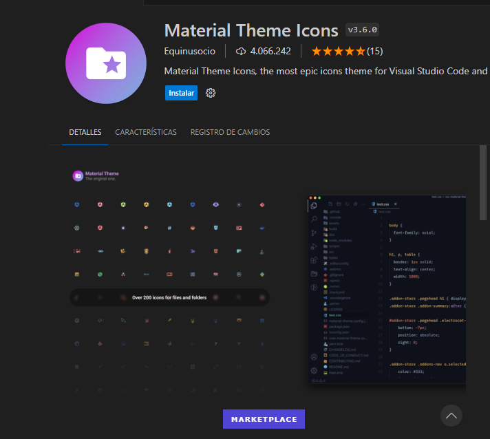
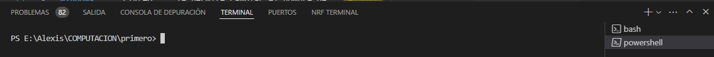
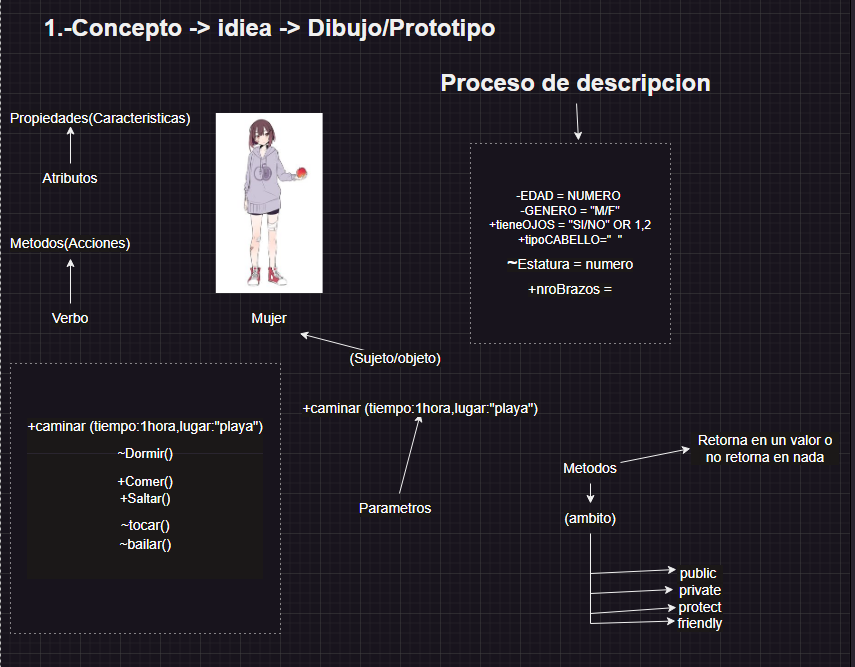
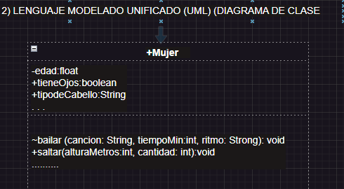
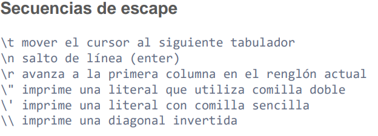
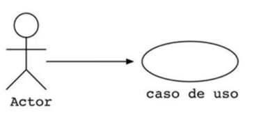
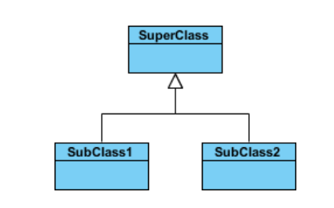

Nombres
Visual Studio Code es un software de Microsoft que edita códigos fuente disponibles para Windows, Linux y macOS. Este programa no necesita tanto espacio para su instalación a diferencia de Visual Studio. Es compatible con JavaScript y Node.js y extensiones a otros lenguajes como Python. Caracteriisticas
Windows: ==CTRL+SHIFT+P== : Abre el panel de control que tiene VSC.
Windows: ==CTRL+P== : Abre panel para cambiar de diferente archivo que tengas en tu carpeta.
Windows: ==CTRL+B== : La pestaña que te muestra tus archivos.
Windows: ==CTRL+D== : Te permite cambiar el nombre de varias palabras/variables del mismo nombre.
Windows: ==CTRL+F== : Te ayuda a buscar palbara/variable en el codigo.
windows: ==CTRL+S== : Es la opcion para guardar.
Windows: ==AlT + or -== : Si esta abierto pestañas te permite cambiar a otra.
Windows: ==AlT + up or down== : Mueve toda la linea de acuerdo a la flecha.
windows: ==SHIFT+ALT+ up or down== : Copia toda la linea a la siguiente.
windows: ==SHIFT+ALT+A== : Pone para comentar una linea.
windows: ==CTRL+K+C== : Pondra toda la linea como comentario.
windows: ==CTRL+T== : Permite mostrar todos los simbolos.
windows: ==CTRL+SPACE== : Te ayuda autocompletar una palabra.
windows: ==CTRL+x== :Borra una linea.
windows: ==ClICK en el archivo + F2== : Cambia el normbre del archivo.
Visual estudio nos permite configurar nuestra inferzas o entorno de trabja a nuestro gusto mediante una gran variedad de extensiones o opcion que posee el mismo visul studio code para esto veremos algunas extenciones que se pueden untilizar para esta personalizacion.
Extension para colocar icnonos a cada uno de nuestros archivos 
Aqui podemos ver como quedaria una carpeta con archivos e imagenes con iconos diferente para ser identificados de forma facil

El terminal o consola es el entorno donde trabjamos directamente con lineas de comando

Este es el terminal por defecto que nos otorga visula studio code el cual pertecene a windows, es decir aqui podremos solo ejecutar comando que pertenezcan a este sistema operativo el cual lleva por nombre power shell
Es una aplicación para entornos de Microsoft Windows que ofrece una capa de emulación para una experiencia de líneas de comandos de Git.
¿Qué es Blash? Bash es el acrónimo en inglés de Bourne Again Shell.
¿Qué es Shell? Es una aplicación de terminal que se utiliza como interfaz con un sistema operativo mediante comandos escritos.
Es un formato que nos permite generar archivos xtml y html utilizando una sintáxis bastante clara y sencilla y sobre todo fácil de escribir.
markdown (para convertir a pdf mi markdown):
Para poner cursiva se debe encerrar entre asteriscos:
*palabra o texto* = palabra o texto
Para poner en negrillas se debe encerrar entre doble asteriscos:
**palabra o texto** = palabra o texto
Para poner cursiva y negrillas se debe encerrar entre triple asteriscos:
***palabra o texto*** = palabra o texto
Windows: ALT+9+6 (`) or windows: ALT+1+2+6 (~)
Nos permite poner una parte del codigo para analizar despues de (```) tenemos que poner el lenguaje de progrmacion.
Ejemplos:
1.
``` java
public int sumar(){
int i=10;
}
```
2.
``` java
public clas Hola{
/* clase principal */
public class void main{
System.out.println();
}
}
```
Para hacer cuadros:
Se organiza el texto en columnas y filas. Las filas se obtienen con salto de linea de texto y las columnas se obtienen encerrando el texto entre barras: |Texto|
Al finalizar la primera fila en donde tenemos los encabezados, se digita una siguiente fila de lineas entrecortadas para dar formato de titulo dentro de la tabla: |----|
|Columna 1 | columna 2 |
|----------|-----------|
| A | B |
| C | D |
Para lo cual obtendremos:
| Columna 1 | columna 2 |
|---|---|
| A | B |
| C | D |
Insertar link o enlace:
Si queremos solo insertar el hipervinculo al URL debemos encerrar entre <> la direccion.
<https://www.google.com>
De lo que obtenemos: https://www.google.com
Si queremos aplicar un hipervinculo a un texto con un direccion, el texto se encierra entre corchetes, el enlace entre parentesis y si deseamos aplicar un mensaje sobre el texto cuando se pose el cursor, se encierra dicho mensaje entre comillas.
[Buscador](https://www.google.com "Google")
De lo que obtenemos: Buscador
Comandos de git


Los diagramas UML (Lenguaje Unificado de Modelado) son una herramienta fundamental en la programación orientada a objetos, especialmente en Java. Permiten visualizar la estructura y el diseño de un sistema de software antes de codificarlo, lo que ayuda a planificar y comunicar ideas de manera clara entre los desarrolladores. UML apoya la abstracción y el diseño de clases, relaciones, patrones de diseño y otros aspectos de POO, facilitando así la comprensión y el desarrollo del software
``` java
public class Mujer(){
private float Mujer edad;
public boolean tieneOjos;
public String tipoCablello;
protect String bailar( String cancion, int tiempoMin, String ritmo){
return "Baile fenomenal";
}
}
```
Es importante porque proporciona una estructura clara para los programas que facilita el desarrollo y mantenimiento del código, permite la reutilización de código y hace que el software sea más flexible y fácil de modificar. Además, la POO puede ayudar a manejar sistemas complejos al dividirlos en partes más pequeñas y manejables, conocidas como objetos

Los constructores en Java son métodos especiales que se utilizan para inicializar objetos. Cuando se crea un nuevo objeto, el constructor establece los valores iniciales de los atributos del objeto y puede realizar cualquier configuración o inicialización necesaria.
Las ventajas de tener constructores en Java incluyen:
Inicialización Controlada: Los constructores proporcionan un lugar centralizado para inicializar los atributos de un objeto, asegurando que el objeto esté en un estado válido desde el momento de su creación.
Sobrecarga de Constructores: Java permite la sobrecarga de constructores, lo que significa que puedes tener múltiples constructores con diferentes listas de parámetros, ofreciendo flexibilidad en la inicialización de objetos.
Legibilidad del Código: Los constructores hacen que el código sea más legible al proporcionar una clara indicación de cómo se deben crear e inicializar los objetos.
public class Coche {
private String marca;
private String modelo;
private int año;
// Constructor
public Coche(String marca, String modelo, int año) {
this.marca = marca;
this.modelo = modelo;
this.año = año;
}

actor .- actua con el sistema,estimula al sistema con algun evento o recibe informacion de sistema. Es un actor externo al sitema
La herencia en Java es un principio de la programación orientada a objetos que permite que una clase (llamada subclase o clase derivada) herede atributos y métodos de otra clase (llamada superclase o clase base) 
la palabra clave extends se utiliza en la declaración de una clase para indicar que esa clase va a heredar de otra clase. La herencia permite que la nueva clase, conocida como subclase, adquiera los atributos y métodos de la clase existente, llamada superclase. Esto facilita la reutilización de código y la creación de jerarquías de clases.
class Superclase {
// Atributos y métodos de la superclase
}
class Subclase extends Superclase {
// La Subclase hereda atributos y métodos de la Superclase
}